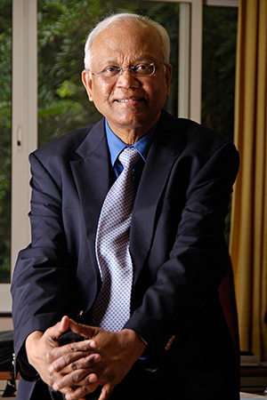
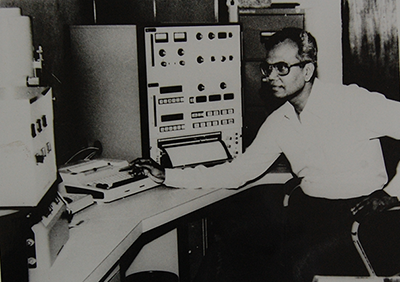

Life
Dr. Raghunath Anant Mashelkar is one of India’s most eminent scientists. He is known for his contributions to India’s National Chemical Laboratory and Council of Scientific & Industrial Research, multiple ‘Mashelkar Committees’, and a successful campaign against foreign patents on Indian traditional knowledge. His mantras of ‘Inclusive Innovation’, ‘More from Less for More’, and ‘Gandhian Engineering’ have been a constant source of inspiration for corporates and youth alike. Born on 1st January 1943 in Mashel, Goa, Ramesh (as he is known to his near and dear) lost his father at the tender age of six. However, his mother Late Mrs. Anjani Mashelkar was committed to doing the best she could for him. It was her determination and foresight that pushed them to move to Mumbai in search of a better livelihood and education. Here they lived in a chawl (a type of shared tenement) and often struggled to make ends meet. He went barefoot to a municipal school and would sometimes be unable to afford a notebook to write his answers in. However, he demonstrated excellence even amidst adversity. He was the brightest student in the school and continuously excelled in his academics.
After successfully completing 7th grade, he was set to take admission at Union High School, Mumbai. However, his mother had a difficult time arranging for 21 rupees for the admission. The obstacle was overcome by borrowing from their maid, who believed in his potential so much that she lent her entire savings so that he could continue to excel academically! At Union High School, young Raghunath’s teacher Mr. Bhave recognized his talent and motivated him to stay focused in life, using the example of a convex lens which can concentrate the sun's rays and even spark a fire. It was this striking example that inspired Raghunath to become a scientist. He cleared his board examinations with flying colours – ranking 11th in Maharashtra – despite having studied by the light of a street lamp!
Young Raghunath had a curiosity so insatiable that he would often sit outside the Majestic Bookstall in Girgaon, reading new books and quickly returning them because he had no money to buy them. After his board exam, he contemplated giving up on further education due to financial constraints. However, the encouragement by his mother and financial support from the Sir Dorabji Tata Trust helped him secure a seat in the prestigious Jai Hind College. As always, he worked hard and stood 2nd in the inter-state examinations. In fact, Jai Hind College awarded him the honour of its most distinguished alumnus in 2003.
Motivated by the bright future for the chemical industry in India, he joined UDCT (Now Institute of Chemical Technology), Mumbai to pursue his bachelor’s degree in Chemical Engineering. After earning his degree, he had the option to go abroad to pursue his master’s degree with a generous scholarship. Instead, he decided to continue his work at UDCT as a postgraduate under the mentorship of Prof. MM Sharma in the area of mass transfer in chemical reactions. He went on to complete his PhD under the guidance Prof. Sharma, finishing his thesis in just three years. His outstanding work earned him a fellowship at Salford University. Here, his guide encouraged him to work in an unrelated field – rheology. Dr. Mashelkar took up the challenge and over time, he made a name for himself as a distinguished Indian researcher.
In 1975, he was asked by Dr. B.D. Tilak (the then director of NCL) to meet Dr. Nayudamma (the then director general of CSIR) at London. In this meeting, Dr. Nayudamma spoke to him about India’s untapped potential for excellence in science and technology, and the scarcity of talent in this area. His words inspired Dr. Mashelkar to work in the science, technology and innovation sector of India. He put aside his personal gains – India was considered a ‘dead end’ back in those days by most – and returned to his homeland.
After establishing himself at the National Chemical Laboratory(NCL) in Pune, he became its director in 1989. Under his leadership, research at NCL shifted focus to cater to the requirements of the industry. This was a revolution in itself! After India’s economy was liberalized in 1991, he oversaw the collaboration of NCL with companies in India and abroad, setting a trend which many others followed. He also played a pivotal role in transforming CSIR (Council of Scientific and Industrial Research) after he became its Director General in 1995. He strived to unify the efforts of the 40 diverse laboratories, establishing a one-team culture and improving internal collaboration, and took CSIR to new heights.
Dr. Mashelkar is probably best known to the common man through his crusade against the US patents on turmeric, neem and basmati rice. Arguing that the healing properties of turmeric are well known as traditional knowledge in India, Dr. Mashelkar fought a 14 month long legal battle to revoke the patent and emerged victorious. This victory was so significant that it changed the way patents were classified, and earned him the moniker of ‘The Warrior of Haldighati’.
Throughout his career, he has written 25 books, 284 research papers, and has been awarded honorary doctorates by 38 universities from India and abroad. He has also actively served the Government of India by chairing 12 highly empowered 'Mashelkar Committees', and has been a member of the Scientific Advisory Council to the Prime Minister. His contributions to the nation and to science at large have been honoured by a plethora of awards, the most significant being the Padma Vibhushan, the Padma Bhushan, the Padma Shri, the Business Week Star of Asia Award, and the Shanti Swaroop Bhatnagar Prize for Science and Technology. He is the third Indian engineer to be inducted as a Fellow of the Royal Society, UK and the first Indian to be elected as a fellow of National Academy of Inventors, US.
Currently, Dr. Mashelkar is the President of the Global Research Alliance, which is the world’s largest network of publicly funded R&D institutes that work together to achieve millennium development goals. He is also the Chairperson of the National Innovation Foundation of India, which aims at promoting grassroots innovations to solve some of society’s biggest problems. He is an ambassador and evangelist for innovation and R&D across the world and serves on the boards of many leading companies.
He lives in Pune, India with his family.
Tribute to Dr. Mashelkar on his 75th birthday by Mr. Arun Firodia